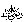
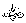

The Origin
In a Hadeeth
reported by AnasRasulullahis reported to have said, “Laylatul Qadr was given to my ummah and not to any other ummah
before this.” Many reasons for the granting of Laylatul Qadr have been mentioned. One reason, according to some Ahaadeeth
is given thus: Rasulullah used to look at the longer lives of the earlier people and was
saddened over the shorter lives of his own ummah. If His ummah
had wished to compete with the people before them in the doing of good
deeds, because of their shorter lives, it would be impossible for them
to either copy or beat them. To cover up for this difference in their
shorter lives, Allahin His countless mercy gave them this night of great blessings. This
means that if any fortunate
person of this ummah
spends during his life time ten such nights in the worship of Allahhe would have earned the reward for ibaadah
of eight hundred and thirty years and even more.
used to look at the longer lives of the earlier people and was
saddened over the shorter lives of his own ummah. If His ummah
had wished to compete with the people before them in the doing of good
deeds, because of their shorter lives, it would be impossible for them
to either copy or beat them. To cover up for this difference in their
shorter lives, Allahin His countless mercy gave them this night of great blessings. This
means that if any fortunate
person of this ummah
spends during his life time ten such nights in the worship of Allahhe would have earned the reward for ibaadah
of eight hundred and thirty years and even more.
Rasulullahonce related to the Sahaabahthe story of a very pious man from the Bani Israel, who used to spend
one thousand months in jihad. On hearing this, the Sahaabahenvied that person because they could not get the same reward
whereupon Allah ^ granted them Laylatul Qadr (the Night of Power).
Our Nabionce mentioned the names of the four most pious people from amongst
the Bani Israel who each spent eighty years in Allah ^ sincere ibaadah, worshipping Him, and not sinning at all. They were Nabi AyyubZakariyyaHizqeeland Yushaa
. The Sahaabah
heard this with astonishment. Then Jibraeel
appeared and recited Surah Qadr, where the blessings of this night were revealed.
This is a great favour and gift of Allah. To make lots of ibaadah on this night is also a blessing from Allah S. How wonderful are those Pious Saints who did not miss the ibaadah of even one Laylatul Qadr
from a young age. The numerous benefits of this night are mentioned in
many books of Hadeeth. The Qur-aan Majeed itself mentions the night in Surah Qadr, of which we shall begin with a short commentary.
(In the name of Allah the beneficent, the Merciful, We have indeed
revealed this (message) in the night of Power. (Suratul Qadr: 1)
On this special night, the Qur-aan was sent down from the lowhul mahfuz
(The preserved Tablet in a special place above the heavens) to the
heavens above the earth. A great book like the Qur-aan-e-kareem being revealed on this night is sufficient to explain its excellence,
not to mention all its other blessings and virtues. In the very next
verse a question is asked.
And what will explain to you what the Night of Power is? (Suratul Qadr:
2)
In other words, the question asked here is: Have you any knowledge as
to the greatness and the great importance of this night? Have you any
knowledge as to the great favours and gifts that are placed in it? The
next verse tells us some of that greatness:
The Night of Power is better than a thousand months. (Suratul Qadr:
3)
The true meaning here is that the reward for spending this night in ibaadah
is better than having spent one thousand months in ibaadah. It is in fact much more, but as to how much more rewarding it is, we
are not told here.
Therein come down the Malaaikah and the Spirit by Allah’spermission on every task (Suratul Qadr: 4)
A good explanation is given on this verse by Imaam Raazi. He explains that when man first appeared on earth, created by
Allah
as His deputy on earth, the Malaaikah
looked at man with doubt. When Allahinformed them of His intention of placing man on earth, they even went
further to ask, “Will you place someone on this earth who shall commit
evil and shed blood?”
On this Night of Power we see that same man worshipping Allah
and loving Him. Those very same Malaaikah who had before
looked down on him with scorn, come down towards him, clearly sorry for
the thoughts they had against him.
In this verse mention is made.... “and the spirit”. Reference is
clearly to Jibraeel. Imaam Bayhaqireports a Hadeeth
by Anas
wherein Rasulullahis reported to have said, “On Laylatul Qadr, Jibraeelcomes down with a group of Malaaikah and makes dua of mercy for every one whom they find busy in ibaadah.”
This same verse which is being discussed says, “By Allah’s permission
on every task....
The Author of Mazhaahirul Haq writes that on this night ages ago the Malaaikah
were created. On this night long ago the creation of Adambegan as the things from which he was created had been gathered on
this night. Trees were planted in Jannah and a large number of Ahaadeeth state clearly that on this night dua’s are accepted.
Peace be until the break of dawn (Suratul Qadr: 5)
Yes, this is the very picture of peace. Throughout the night the Malaaikah recite salaam
on the true believers who love their Lord. As one group come down
another goes up as is explained in the Ahaadeeth. Another meaning is that it is a night of complete safety from evil
and mischief. These blessings remain throughout the night until the
break of dawn and are not limited to any particular hour.